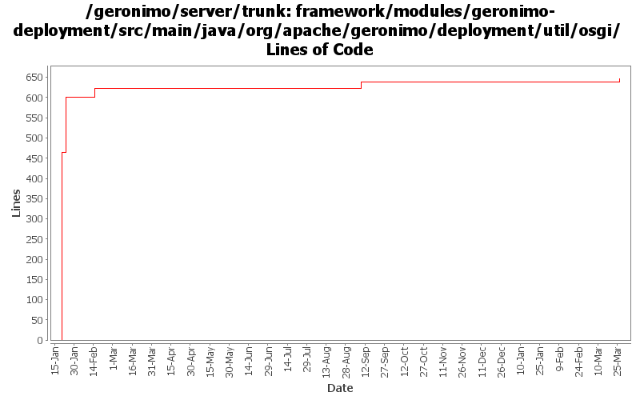

[root]/framework/modules/geronimo-deployment/src/main/java/org/apache/geronimo/deployment/util/osgi

| Author | Changes | Lines of Code | Lines per Change |
|---|---|---|---|
| Totals | 18 (100.0%) | 684 (100.0%) | 38.0 |
| xuhaihong | 15 (83.3%) | 663 (96.9%) | 44.2 |
| djencks | 3 (16.7%) | 21 (3.1%) | 7.0 |
GERONIMO-6306 Keep the same behavior with hidden-classes between Geronimo 2.* and 3.*
11 lines of code changed in 1 file:
GERONIMO-6251 More changes to use OsgiMetaDataProvider, update the interface a bit.
GERONIMO-6254 Shared library does not work in the deployment process
1 lines of code changed in 2 files:
GERONIMO-6251 determine if server is actually fully started, provide access to DependencyManager for osgi metadata purposes
21 lines of code changed in 3 files:
GERONIMO-6157 Generate fixed version number for the import packages
20 lines of code changed in 2 files:
Add logic to handle the scenario when org.test and !org.test are configured at the same time.
Currently, the ! takes the higher precedence.
25 lines of code changed in 1 file:
Use client artifact resolver while generating import packages for client module, as it uses different artifact aliases mapping
142 lines of code changed in 3 files:
GERONIMO-5680 Remove dynamic import * and use calculated import packages on the runtime, only for deployed applications now
464 lines of code changed in 6 files: